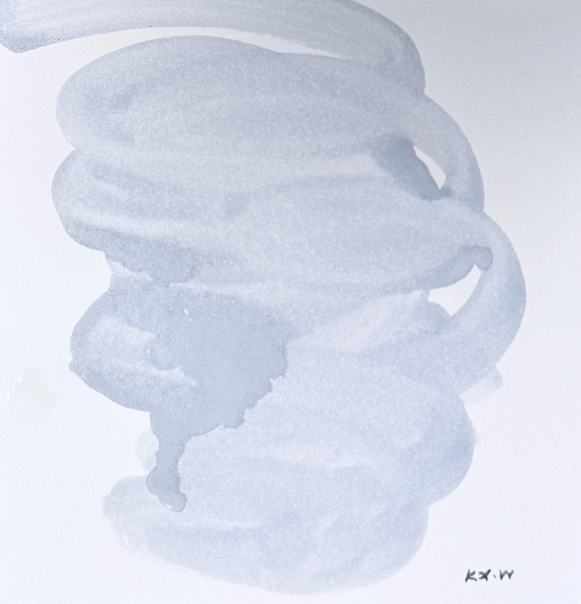

Enfolded
覆层

- Artwork ID / 作品编号
- KW-A-000002
- Year / 年份
- 2026
- Medium / 媒介
- Acrylic on paper / 纸本丙烯
- Dimensions / 尺寸
- 19.5 × 18.5 cm (H × W / 高 × 宽)
Layered grey forms overlap, loop and enclose one another. A force seems to move within the structure, yet remains held by it. The work stays with the simultaneous conditions of enclosure, pressure and the impulse to find an opening.
层层叠合的灰色形态彼此包裹、缠绕，形成不断向内部收紧的结构。某种力量似乎试图移动和挣脱，却始终处在覆盖之中。作品关注被包裹、承受压力与寻找出口同时存在的状态。